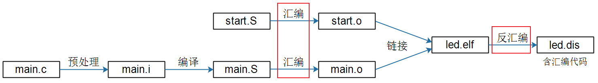
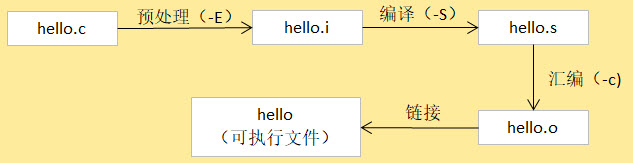

<!DOCTYPE lake>
<h2 data-lake-id="O22tv" data-lake-index-type="2" id="O22tv"><span data-lake-id="ue75c3b9a" id="ue75c3b9a">gcc编译器</span></h2><p data-lake-id="u5db33d53" id="u5db33d53"><span class="lake-fontsize-12" data-lake-id="ue52730d2" id="ue52730d2" style="color: rgb(64, 64, 64); background-color: rgb(252, 252, 252)">GCC（GNU Compiler Collection）是由 GNU 开发的编程语言编译器。 GCC最初代表“GNU C Compiler”，当时只支持C语言。 后来又扩展能够支持更多编程语言，包括 C++、Fortran 和 Java 等。 因此，GCC也被重新定义为“GNU Compiler Collection”，成为历史上最优秀的编译器， 其执行效率与一般的编译器相比平均效率要高 20%~30%。</span></p><h2 data-lake-id="pDcpJ" data-lake-index-type="2" id="pDcpJ"><span data-lake-id="ud2e1f39e" id="ud2e1f39e" style="color: rgb(64, 64, 64); background-color: rgb(252, 252, 252)">安装gcc编译器</span></h2><span class="yuque-card-unsupported">[codeblock]</span><p data-lake-id="u21f1c34b" id="u21f1c34b"><span class="lake-fontsize-12" data-lake-id="u10e8ee9c" id="u10e8ee9c">如果安装失败，则按照如下流程安装：</span></p><span class="yuque-card-unsupported">[codeblock]</span><h2 data-lake-id="UGAGz" data-lake-index-type="2" id="UGAGz"><span data-lake-id="u5d4fd0d8" id="u5d4fd0d8">gcc参数</span></h2><table class="lake-table" data-lake-id="PPgE0" id="PPgE0" margin="true" style="width: 731px"><colgroup><col width="356"/><col width="375"/></colgroup><tbody><tr data-lake-id="ua6352dd4" id="ua6352dd4"><td data-lake-id="u0074c6d7" id="u0074c6d7"><p data-lake-id="ua621a99c" id="ua621a99c" style="text-align: center"><strong><span class="lake-fontsize-12" data-lake-id="u59ee0101" id="u59ee0101" style="color: rgb(51, 51, 51)">选项</span></strong></p></td><td data-lake-id="u71dce155" id="u71dce155"><p data-lake-id="u32cf14f2" id="u32cf14f2" style="text-align: center"><strong><span class="lake-fontsize-12" data-lake-id="ub4acfe1c" id="ub4acfe1c" style="color: rgb(51, 51, 51)">功能</span></strong></p></td></tr><tr data-lake-id="u8416cc5c" id="u8416cc5c"><td data-lake-id="u31977340" id="u31977340"><p data-lake-id="ud59b3100" id="ud59b3100" style="text-align: center"><span class="lake-fontsize-12" data-lake-id="uaa8a891f" id="uaa8a891f" style="color: rgb(51, 51, 51)">-v</span></p></td><td data-lake-id="ueb487572" id="ueb487572"><p data-lake-id="uacd73361" id="uacd73361" style="text-align: center"><span class="lake-fontsize-12" data-lake-id="u613a558c" id="u613a558c" style="color: rgb(51, 51, 51)">查看gcc编译器的版本，显示gcc执行时的详细过程</span></p></td></tr><tr data-lake-id="ufc353db5" id="ufc353db5"><td data-lake-id="u86b54e1b" id="u86b54e1b" style="background-color: rgb(248, 248, 248)"><p data-lake-id="ue8e592bf" id="ue8e592bf" style="text-align: center"><span class="lake-fontsize-12" data-lake-id="u4f20300e" id="u4f20300e" style="color: rgb(51, 51, 51)">-o </span><span class="lake-fontsize-12" data-lake-id="uaaf441a3" id="uaaf441a3" style="color: rgb(167, 167, 167)">&lt;file&gt;</span></p></td><td data-lake-id="ua603b277" id="ua603b277" style="background-color: rgb(248, 248, 248)"><p data-lake-id="u2dc1f6c0" id="u2dc1f6c0" style="text-align: center"><span class="lake-fontsize-12" data-lake-id="ua599df13" id="ua599df13" style="color: rgb(51, 51, 51)">指定输出文件名为file，这个名称不能跟源文件名同名</span></p></td></tr><tr data-lake-id="u9d4a9340" id="u9d4a9340"><td data-lake-id="u1ecee100" id="u1ecee100"><p data-lake-id="u8d5a1d46" id="u8d5a1d46" style="text-align: center"><span class="lake-fontsize-12" data-lake-id="uc673b4af" id="uc673b4af" style="color: rgb(51, 51, 51)">-E</span></p></td><td data-lake-id="ub48ca634" id="ub48ca634"><p data-lake-id="u03c3546b" id="u03c3546b" style="text-align: center"><span class="lake-fontsize-12" data-lake-id="u3a809323" id="u3a809323" style="color: rgb(51, 51, 51)">只预处理，不会编译、汇编、链接</span></p></td></tr><tr data-lake-id="u0003e139" id="u0003e139"><td data-lake-id="ub2f8a443" id="ub2f8a443" style="background-color: rgb(248, 248, 248)"><p data-lake-id="u12794409" id="u12794409" style="text-align: center"><span class="lake-fontsize-12" data-lake-id="ua3813239" id="ua3813239" style="color: rgb(51, 51, 51)">-S</span></p></td><td data-lake-id="uc0346f9a" id="uc0346f9a" style="background-color: rgb(248, 248, 248)"><p data-lake-id="u5e42b7f7" id="u5e42b7f7" style="text-align: center"><span class="lake-fontsize-12" data-lake-id="u81c167a1" id="u81c167a1" style="color: rgb(51, 51, 51)">只预处理，编译，不会汇编、链接</span></p></td></tr><tr data-lake-id="u39c5b24c" id="u39c5b24c"><td data-lake-id="ua3843183" id="ua3843183"><p data-lake-id="uc74805be" id="uc74805be" style="text-align: center"><span class="lake-fontsize-12" data-lake-id="u5ec96b70" id="u5ec96b70" style="color: rgb(51, 51, 51)">-c</span></p></td><td data-lake-id="u598bb7ca" id="u598bb7ca"><p data-lake-id="ue5dd8c28" id="ue5dd8c28" style="text-align: center"><span class="lake-fontsize-12" data-lake-id="uc5b6e8fa" id="uc5b6e8fa" style="color: rgb(51, 51, 51)">预处理，编译和汇编，不会链接</span></p></td></tr></tbody></table><h2 data-lake-id="hnjtu" data-lake-index-type="2" id="hnjtu"><span data-lake-id="uc761a8b0" id="uc761a8b0">gcc编译过程</span></h2><p data-lake-id="uf6b7e775" id="uf6b7e775"></p><p data-lake-id="u3d614b70" id="u3d614b70"><span class="lake-fontsize-12" data-lake-id="u7caa37ad" id="u7caa37ad" style="color: rgb(64, 64, 64); background-color: rgb(252, 252, 252)">GCC 编译工具链在编译一个C源文件时需要经过以下 4 步：</span></p><ol list="u162b495f"><li data-lake-id="u7996d2fd" fid="u797916ca" id="u7996d2fd"><strong><span class="lake-fontsize-12" data-lake-id="u27b22982" id="u27b22982" style="color: rgb(64, 64, 64); background-color: rgb(252, 252, 252)">预处理</span></strong><span class="lake-fontsize-12" data-lake-id="uc4b96be4" id="uc4b96be4" style="color: rgb(64, 64, 64); background-color: rgb(252, 252, 252)">：在预处理过程中，对源代码文件中的文件包含(include)、 预编译语句(如宏定义define等)进行展开，生成.i文件。 可理解为把头文件的代码、宏之类的内容转换成更纯粹的C代码，不过生成的文件以.i为后缀。</span></li><li data-lake-id="u7760b74d" fid="u797916ca" id="u7760b74d"><strong><span class="lake-fontsize-12" data-lake-id="ub6c6f545" id="ub6c6f545" style="color: rgb(64, 64, 64); background-color: rgb(252, 252, 252)">编译</span></strong><span class="lake-fontsize-12" data-lake-id="uc25acaf7" id="uc25acaf7" style="color: rgb(64, 64, 64); background-color: rgb(252, 252, 252)">：把预处理后的.i文件通过编译成为汇编语言，生成.s文件，即把代码从C语言转换成汇编语言，这是GCC编译器完成的工作。</span></li><li data-lake-id="u87a968c4" fid="u797916ca" id="u87a968c4"><strong><span class="lake-fontsize-12" data-lake-id="u0018ce7b" id="u0018ce7b" style="color: rgb(64, 64, 64); background-color: rgb(252, 252, 252)">汇编</span></strong><span class="lake-fontsize-12" data-lake-id="ud2ebdab3" id="ud2ebdab3" style="color: rgb(64, 64, 64); background-color: rgb(252, 252, 252)">：将汇编语言文件经过汇编，生成目标文件.o文件，每一个源文件都对应一个目标文件。即把汇编语言的代码转换成机器码，这是as汇编器完成的工作。</span></li><li data-lake-id="u2465fc87" fid="u797916ca" id="u2465fc87"><strong><span class="lake-fontsize-12" data-lake-id="ubea6daec" id="ubea6daec" style="color: rgb(64, 64, 64); background-color: rgb(252, 252, 252)">链接</span></strong><span class="lake-fontsize-12" data-lake-id="uf5d99d8f" id="uf5d99d8f" style="color: rgb(64, 64, 64); background-color: rgb(252, 252, 252)">：最后将每个源文件对应的.o文件链接起来，就生成一个可执行程序文件，这是链接器ld完成的工作。</span></li></ol><p data-lake-id="ua7d777fb" id="ua7d777fb"><br/></p><p data-lake-id="ufb0ab836" id="ufb0ab836"></p><span class="yuque-card-unsupported">[codeblock]</span><h2 data-lake-id="j2bPt" id="j2bPt"><br/></h2><p data-lake-id="u4a2c20c1" id="u4a2c20c1"><br/></p><p data-lake-id="u743a712d" id="u743a712d"><br/></p>